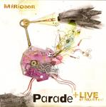

| Artist: | Miriodor |
| Title: | Parade + Live At Nearfest |
| Label: | Cuneiform Rune 208/209 |
| Length(s): | 64/68 minutes |
| Year(s) of release: | 2005 |
| Month of review: | [11/2005] |
| 1) | Pyramide | 3.38 |
| 2) | Scarabee | 3.24 |
| 3) | Caramba | 0.50 |
| 4) | Uppsala | 5.49 |
| 5) | Tartine | 1.33 |
| 6) | Contrees Liquides | 5.45 |
| 7) | Polar | 6.32 |
| 8) | Boite A Surprise | 4.06 |
| 9) | Checkpoint Charlie | 3.20 |
| 10) | Talrika | 4.59 |
| 11) | Le Cruciverbiste | 5.27 |
| 12) | Gavotte Chetive | 1.57 |
| 13) | Bonsai Givre | 6.45 |
| 14) | Boite A Rebuts | 2.00 |
| 15) | Preparatifs De Vacances | 1.17 |
| 16) | Foret Dense | 6.17 |
Samples of Parade occur by kind permission of Cuneiform Records.
Opener Pyramide focuses on gypsy type violin, grinding through in its most neurotic way, to the point where it gets somewhat annoying. Scarabee opens with fuzzy guitar, but soon starts alternating between this and thin sounding synths.
Uppsala brings in Holdsworthian guitar bits, combining them with funky basses, neuroticism and broken rhtyhms. Where I might express whatevers on many of the other tracks on the album, I won't. The first couple of tracks have set down the parameters for this album well enough. The avant prog released on Cuneiform might be seperated into two types: the more melodically directed build up pieces such as created by Univers Zero, 5UU's or Present or the experimental miniatures of such bands as PFS, Sotos or Rattlemouth. The latter are often less well known (as far as the first are) and are more neurotic. They also appeal to me lot less than those in the former category. Guess what this album falls in.
The album does have some noticable mentions: Polar uses its greater length to build up towards something of a high. Sure, the track has its neurotic bits (the violin blending in towards the end really doesn't help), but this track is mostly in the UZ category. Talrika starts out very UZ-like, but slowly moves over towards the neurotic side, moving away from what sounds like a tension build up early on. Remarkably the short Boite A Rebuts also falls in the category.
The NearFest show displays some neuroticism, as well. However, on this 2002 recording the guitar isn't as fuzzed and the synths do not sound as thin as on the studio effort. The neuroticism is kept in check well enough, making the music less jumpy, more akin to jazz improvisational music (without becoming that). It displays the kind of build up heard from the UZ's and 5UU's of this world. This results in a sound that to me does stay on the right side of the edge (over which Parade went). The result is far more pleasing.